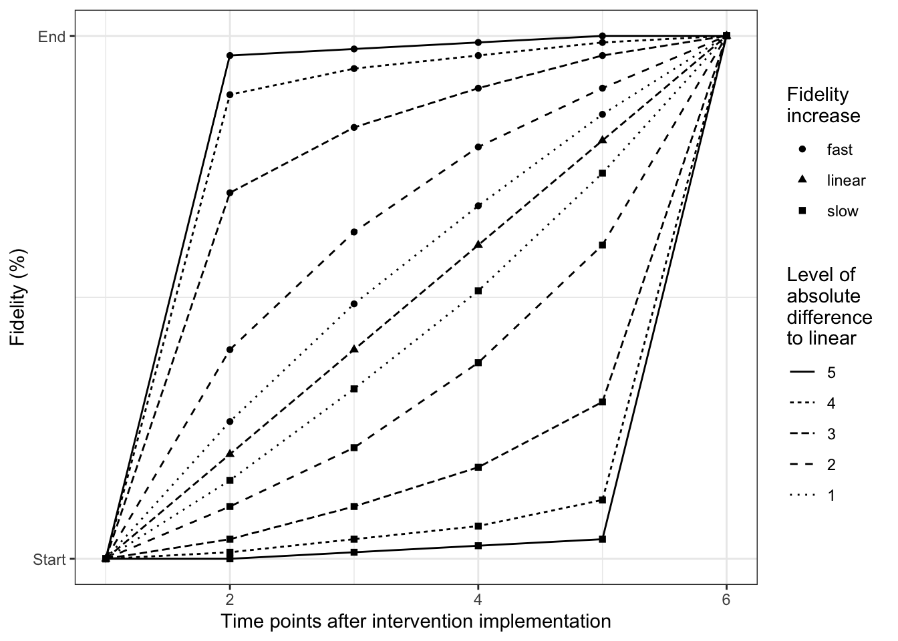

This chapter offers additional statistical information.
Steps within one simulation experiment
How to conduct design matrices
How to determine fidelity patterns and corresponding design matrices
3.1 Explanation of simulation experiment and provided corresponding function
For a simulation experiment like in [Tutorial] it is not necessary to understand the whole statistical modeling background, which is figured out here.
Each simulation step includes three necessary steps:
Determining the design matrix regarding the specified design
Sampling data
Effect estimation from the data
and will be explained with more detail in the following subsections.
For the first 2 steps the provided R-package {samplingDataCRT} v1.0 (Trutschel and Treutler 2017) is needed, for the last {lme4}. How to install and load see [Introduction]. The first steps is done once and the latter two are used repeatedly through one simulation experiment within each scenario setting specified in step 1.
3.1.1 Determining the design matrix regarding the chosen design
To specify a cluster randomized study the following parameter has to be determined:
Number of clusters (e.g. hospitals, nursing homes, …) obtained through the study
Number of time points the clusters are followed
Cluster size refers to the number of individuals obtained within one cluster
Study design: parallel design or Stepped wedge design (cross-over as well possible)
Study type: cross-sectional if individuals could be different within the cluster between time points or longitudinal if individuals are followed over time
Based on the example in the main article, we specify a hypothetical example including parameter settings for a reference setup of the simulation experiment: a cross-sectional stepped wedge cluster randomized trial with 10 nursing homes, 6 time points and 10 individuals within each nursing home and time point (see main article). All parameters can be adapted to an own practical example. The resulting reference design matrix can be create manually (by create a corresponding matrix) or by the provided R-function designMatrix().
#######################################################using the parameter setting of Table 1 in the article######################################################## Design ##############K<-7#number of time pointsI<-6#number of clusterSw<-1#number of cluster switches per time point can be manually setJ<-10#Subjects = Number of individuals per cluster#design matrix of "SWD" with given setting(X<-samplingDataCRT::designMatrix(nC=I, nT=K, nSw=Sw))
3.1.2 Sampling data of a cluster randomized trial with a given design
To sample data for a cluster randomized trial using sampling from a multivariate normal distribution provided by the package {samplingDataCRT}, several model parameter has also be specified:
Baseline mean of the outcome of interest
Intervention effect (change/difference in mean outcome) by implementing the intervention)
Time trend effects
Variance within the multilevel data: between clusters, between individuals, within individuals which provide an estimate of the intra-cluster correlation coefficient (ICC) as an measure of dependencies within clusters.
In the example here we set the mean outcome to 10 (e.g. the mean population value of measured quality of life), the intervention effect which aimed to change quality of life of 1, and no time trends. With a given between cluster variance of sigma.3 and a error variance of sigma.1, the resulting ICC is ICC.
## Model parameter ######################mu.0<-10# Baseline mean of the outcome of interesttheta <-1# intervention effectbetas<-rep(0, K-1) # no Time trend, but could be included# variability within or error variance (H&H sigma)sigma.1<-2# variability within clusters, if longitudina datasigma.2<-NULL# between clusters variability (H&H tau)sigma.3<-sigma.1*sqrt(0.001/(1-0.001)) #resulting ICC(ICC<-sigma.3^2/(sigma.3^2+sigma.1^2))
[1] 0.001
To note, by choosing longitudinal or cross-sectional design, we need to specify in the first case 3, in the second only two variances regarding using a three- instead of a two-level hierarchical experiment with the following meaning:
three-level design (longitudinal data):
between clusters variability
within cluster (or between individuals) variability
within individuals (or error) variability
two-level design (cross-sectional data):
between clusters variability [\(\sigma\) put this reference here Hussey and Hughes 2007]
within cluster (or error) variability [ \(\tau\) put this reference here Hussey and Hughes 2007]
A complete data set for a special design with a given setup can be sampled by the given function R-function {sampleData()}. Therefore,the complete data design matrix and the covariance-variance matrix for the data given the design are also needed to be specified, which is provided by the functions R-function {completeDataDesignMatrix()} and R-function {CovMat.Design()}. The complete data design matrix has the size of (Number of cluster x cluster size x Number of time points) rows and (Number of model parameters) columns. To sample the data from for a cluster randomized trial, it has additionally be specified, if the individuals are followed over time (longitudinal design) or not (cross-sectional design).
#complete data design matrixD<-samplingDataCRT::completeDataDesignMatrix(J, X)(dim(D))
[1] 420 8
#covariance-variance matrix for the data given the designV<-samplingDataCRT::CovMat.Design(K, J, I, sigma.1=sigma.1, sigma.3=sigma.3)dim(V)
[1] 420 420
#corresponding fixed effects in linear mixed modelparameters<-c(mu.0, betas, theta)#sample complete data given the setup# study design type = cross-sectionaltype<-"cross-sec"sample.data<-samplingDataCRT::sampleData(type = type, K=K,J=J,I=I, D=D, V=V, parameters=parameters)
To validate the number of observations provided by the sampling method a summary of the data can be conducted.
dim(sample.data)
[1] 420 5
#show the number of observations within the SWDxtabs(~cluster+measurement, data=sample.data)
The sampled data can then be analyzed by a linear mixed model with the function R-function{lmer()} of the package R-package {lme4}, hence the parameter of the model will be estimated.
#analysis of the two-level data by a linear mixe modellme4::lmer(val~intervention+measurement + (1|cluster), data=sample.data)
Linear mixed model fit by REML ['lmerMod']
Formula: val ~ intervention + measurement + (1 | cluster)
Data: sample.data
REML criterion at convergence: 1490.537
Random effects:
Groups Name Std.Dev.
cluster (Intercept) 0.283
Residual 1.409
Number of obs: 420, groups: cluster, 6
Fixed Effects:
(Intercept) intervention measurement2 measurement3 measurement4
10.0381 1.1715 -0.4803 -0.2478 -0.3842
measurement5 measurement6 measurement7
-0.4360 0.1092 -0.3662
This process of sampling data and effect estimation from the data will be used repeatedly through the simulation experiment within each scenario setting.
3.2 Determine differrent design matrices
The function designMatrix of the R-package {samplingDataCRT} provides the design matrix of cluster randomized trials with several study designs, given the number of clusters, time points and cluster size assumed for the trial. We show here for two examples:
parallel
SWD
3.2.1 Parallel cluster randomized trials
Within the function the design argument is set ‘parallel’, and the parameter nSW indicates the number of clusters are being control group.
## Design paramter ########################I <-6# number of clustersJ <-10# number of individuals per cluster (used later in simulation-step)K <-7# number of time pointsSw <-round(I /2) # number of cluster within the control group# design matrix for parallel design(designMat_prll <- samplingDataCRT::designMatrix(nC = I, nT = K, nSw =round(I /2), design ="parallel"))
Whereas the design parameters can be the same as in the parallel study the design matrix differs accordingly when changing the argument design = "SWD" (which is also set by default, so it has not to be specified). The parameter ‘nSW’ indicates here the number of cluster switches per time point from control to intervention group.
## Design matrix ##I <-6# number of clustersJ <-10# number of individuals per cluster (used later in simulation-step)K <-7# number of time pointsSw <-1# number of cluster switches per time point can be manually set# design matrix of "SWD"(designMat_SWD <- samplingDataCRT::designMatrix(nC = I, nT = K, nSw = Sw, design ="SWD"))
Fidelity refers to the degree to which an intervention was implemented as it was prescribed or intended. We aim to include different patterns of how fidelity might increase over time to estimate the respective effects on power of the study. To describe hypothetical fidelity patterns of increasing fidelity (slow, linear, fast) different mathematical functions (i.e. logistic, linear and exponential curves) are implemented. By considering different values for the slope parameter we can cover a range of fidelity patterns. The slope parameter ranges form \((0,\infty)\), where a slope parameter near to \(0\) indicates a increase far away from a linear (fast increase upper left corner, slow increase right bottom corner curve) and a great slope parameter near to linear (See figure Figure 3.1 ).
library(ggplot2)library(gridExtra)#study design##############number of measurementK<-7#points of time afterinterventionT.points<-K-1#parameter Fidelity specification###############################Fid.T1<-0.2Fid.End<-1####set several slopes of increasing fidelity#######################################slope.seq<-round(exp(1)^(seq(-2,2,1)),2)nr.sl<-length(slope.seq)####fidelity patterns determined by several slopes within slow and fast increase##############################################################################res.plot.Patterns<-NULLfor(sl in slope.seq){ res<-fidelitysim::find.Fidelity.log(time.points=T.points, Fid.End, Fid.T1, par.slope=sl) res<-data.frame(res, FUN="log", slope=sl) res.plot.Patterns<-rbind(res.plot.Patterns, res) res<-fidelitysim::find.Fidelity.exp(time.points=T.points, Fid.End, Fid.T1, par.slope=sl) res<-data.frame(res, FUN="exp", slope=sl) res.plot.Patterns<-rbind(res.plot.Patterns, res)}#fidelity pattern for linear increase#####################################res.lin<-fidelitysim::find.Fidelity.linear(time.points=T.points, Fid.End, Fid.T1)res.plot.Patterns<-rbind(res.plot.Patterns, data.frame(res.lin, FUN="linear", slope=1))

Figure 3.1: Patterns of a fidelity increase (fast, linear or slow) over 6 times points
For our calculation within the simulation we use then these determined fractional values of intervention effects to define the degree of deviation from 100% implementation within the design matrix. Technically 3 functions in the R-package {fidelitysim} provides the implementation of the different patterns of fidelity. To create a corresponding design matrix using the fidelity patterns also a function is provided for each design.
3.3.1 Slow increase of fidelity using exponential function
Here we show an example how to determine the design matrix for a cluster randomized parallel design study (with same design as above) with existing implementation error, where fidelity starts with 40% after implementation and reach after a slow increase 80% at the end of the study. A great slope parameter is chosen which reflect a slow increase more closed to the linear increase.
#study design#############I <-6# number of clustersJ <-10# number of individuals per cluster (used later in simulation-step)K <-7# number of time pointsSw<-round(I/2) # number of cluster within the control group#parameter Fidelity specification###############################Fid.T1<-0.4Fid.End<-0.8#parameter tunes the slope for the log and exp functionsslope.seq<-5#exponential function to determine slow increase(res.exp<-fidelitysim::find.Fidelity.exp(time.points=K, Fid.End, Fid.T1, par.slope=slope.seq))
3.3.2 Linear increase of fidelity using linear function
Here we show an example how to determine the design matrix for a cluster randomized parallel design study (with same design as above) with existing implementation error, where fidelity starts with 40% after implementation and reach after a linear increase 80% at the end of the study.
#parameter Fidelity specification###############################Fid.T1<-0.4Fid.End<-0.8#slope for linear functionm<-(Fid.T1-Fid.End)/(1-(K-1))#linear increase(res.lin<-fidelitysim::find.Fidelity.linear(time.points=K, Fid.End, Fid.T1))
3.3.3 Fast increase of fidelity using logarithmic function
Here we show an example how to determine the design matrix for a cluster randomized stepped wedge design study (with same design as above) with existing implementation error, where fidelity starts with 20% after implementation and reach after a fast increase 100% at the end of the study. A small slope parameter is chosen for determining the fidelity curve, which reflect a very fast increase.
Sw <-1# number of cluster switches per time point can be manually set#parameter Fidelity specification###############################Fid.T1<-0.2Fid.End<-1#parameter tunes the slope for the log and exp functionsslope.seq<-0.2#logistic function to determine fast increase(res.log<-fidelitysim::find.Fidelity.log(time.points=K-1, Fid.End, Fid.T1, par.slope=slope.seq))